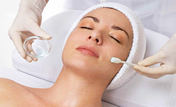

PEELINGS
Los peelings químicos son procedimientos destinados a obtener una renovación celular, que puede realizarse a distintos nieles de profundidad, para lograr una piel más homogénea, lisa, brillante, tensa y tersa.
Los peelings químicos, generan una descamación cutánea, que varía en intensidad, según el tipo de producto químico que se utilice, el tiempo que se lo deje en contacto con la piel, la concentración del producto y si se lo realiza ocluyendo la zona o no.
Es un procedimiento muy útil para mejorar el aspecto de las pieles manchadas, con poros dilatados, envejecidas, con acné o cicatrices.
Es importante tener presente que luego de la realización de este procedimiento, no se exponga la piel al sol y que se utilice protector solar para estar al aire libre, aun en días nublados.
También, el paciente debe ser informado que puede reactivarse el herpes labial luego del procedimiento y que la piel podrá estar descamada y enrojecida algunos días, según cada caso en particular.
Por otra parte los peelings mecanicos utilizados hoy en día son los conocidos como microdermoabrasión con puntas de diamantes. Estos generan una remoción de capas superficiales de la piel, por medio de puntas que poseen una superficie rugosa. Generalmente, yo lo utilizo siempre como un acompañamiento del peeling químico y no como técnica única.